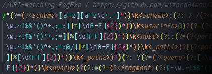

Top Tools
Adaptive Image Component
Problem: Making images responsive across multiple layouts is challenging when there are so many combinations of sizing, alignment, and fit that can work differently based on the image itself (SVGs in particular) and its containing element(s).
Solution: A web component to handle the inconsistencies, isolate the layout and styling, and use element attributes for the basic configuration.
Regex Parsers, Grammars, and Syntax Highlighting
Problem: Syntax highlighting for regular expressions is usually done the same as if it were a simple string, making it difficult to troubleshoot a regex without an external tool.
Solution: Two Tree-sitter grammars & parsers for JavaScript regular expressions (with and without the Unicode flag). These provided syntax highlighting for the (now sunsetted) Atom text editor.
Improved JavaScript Type Testing
Problem: Checking the type and validity of values in JavaScript can be lengthy. Type coercion makes it complicated and error prone. And if you don't know the ins-and-outs, you can get some pretty unexpected results.
Solution: A robust alternative to basic type testing, making the code more comprehensible and the outcomes more predictable.
URI and Email Address Validation
Problem:Getting info from a URL is usually rather easy, but detecting obfuscated hostnames or using URIs with schemes other than HTTP and HTTPS can be more complicated.
Also, I've encountered forms that require an email address but that don't accept anything but the most basic addresses as valid.
Solution: Functions to validate, parse, and normalize URIs and email addresses according to specs.
Hardware Hackery
Microsoft Macros
Excel VBA Macros
Copy/Paste
Three ways to copy & paste in Excel VBA.
Strip HTML
Strip HTML tags from selected cells.
Files & Folders
Functions for and example of traversing files and folders.
Miscellaneous
Macros for simple stuff I've done often, including changing text casing and number formatting.
Miscellaneous Mentionables
Stack Sticky-positioned Elements (WIP)
Problem: A sticky-positioned HTML element can overlap or be hidden by another in the same containing block.
Solution: Position elements so they "stack" above/below each other to remain visible until the container itself scrolls out of view.
Language Grammars
In addition to the regex grammars, these were all created for syntax highlighting.
G-code
-
A TextMate grammar for g-code, particularly for FFF/FDM 3D printing.
Roll20 Scripts
-
A Tree-sitter grammar for macros, abilities, and roll templates on Roll20.
-
A TextMate grammar just for macros.
Phone Numbers
Multiple regexes for U.S. phone numbers depending on how restrictive you need to be.
Element Dimensions
This JavaScript function provides all the positions and dimensions of an element's boxes, including margins, borders, scrollbar gutters, padding, and content. Positions can be relative to the viewport, another element, or a coordinate.
Image Converter
Drop any image onto the page to resize it and/or add a background color (for images with transparency), then save it as a PNG or JPEG. Just a simple use of the HTML <canvas> element.